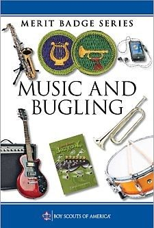
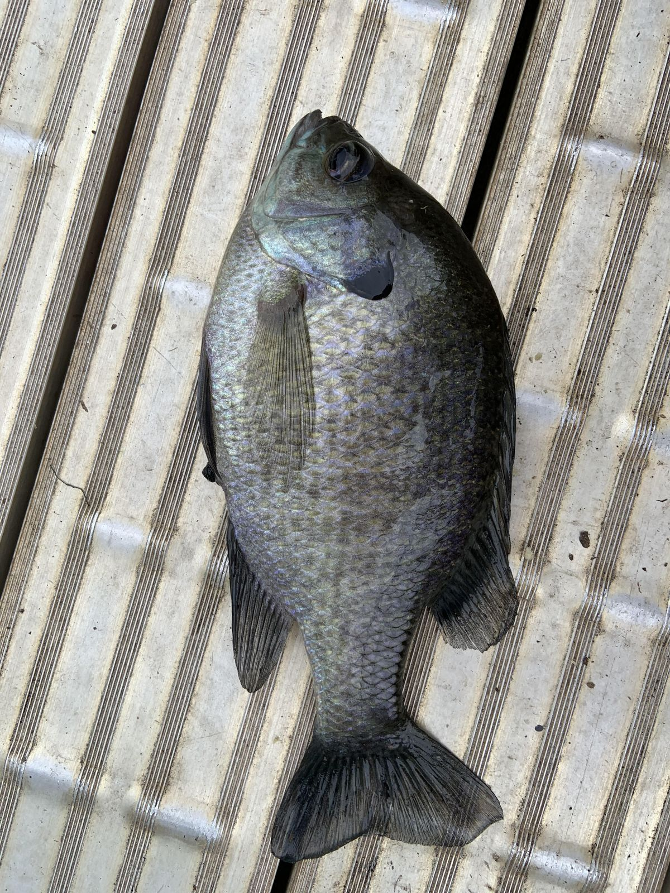
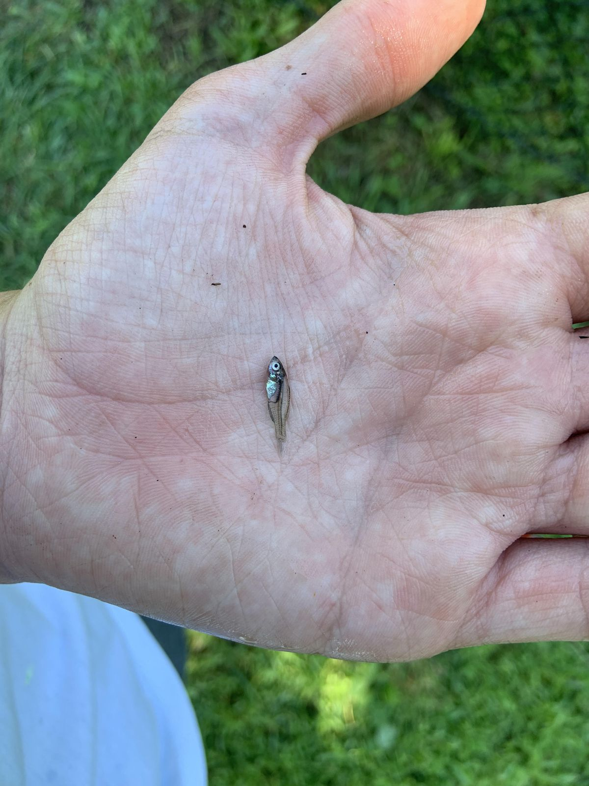
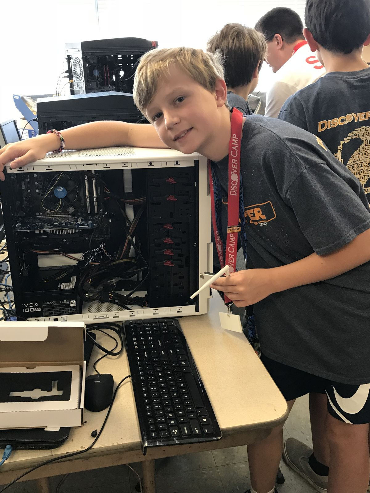
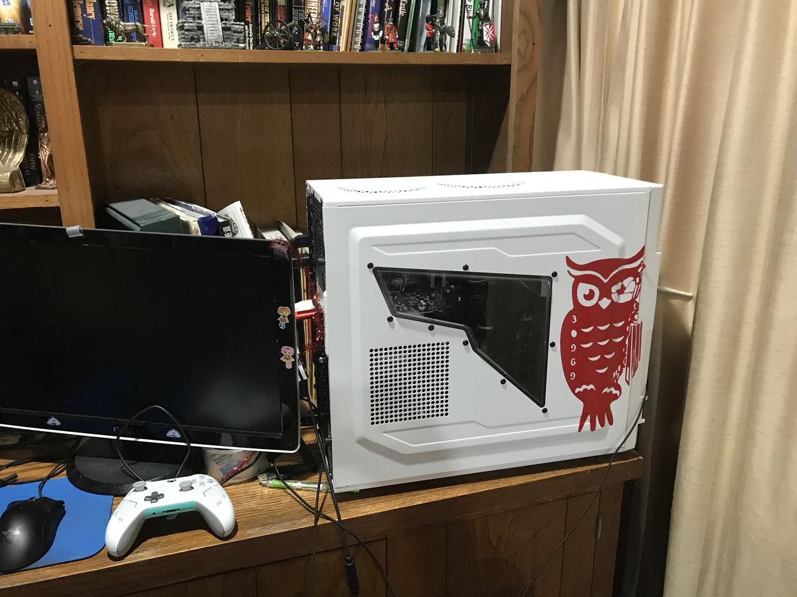
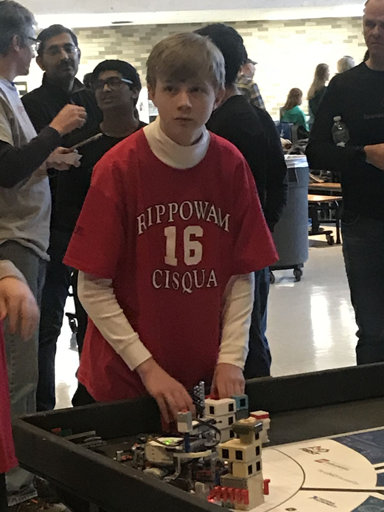
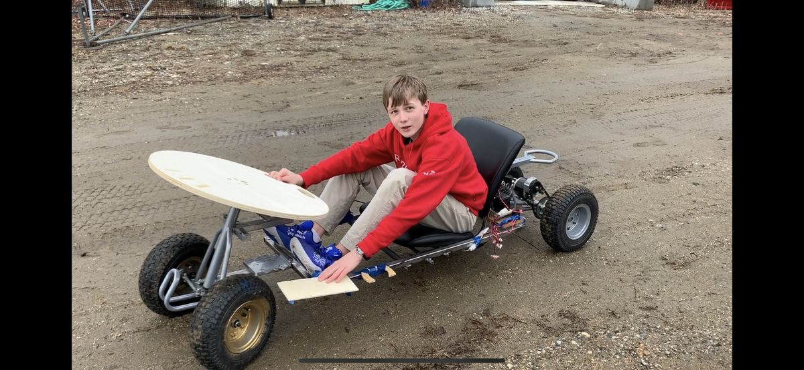

Paul
Creegan
I build things, break things, and then document how they work. Eagle Scout, fishing specialist, and the president of my school's cybersecurity club.
- Location
- Westchester, NY
- Status
- Open to work
- Focus
- Cybersecurity
- Rank
- Eagle Scout
Eagle Scout at fourteen.
I spent seven years as a Cub Scout and Boy Scout, and reached Eagle Scout — the highest rank — at 14. Getting there meant earning 21 merit badges: 13 required, 8 of my choosing, each one taught by a counselor who works in that field.
My favorites were Citizenship in the Community, because it's about being useful to the people around you, and Fishing, which I already did every summer.
Earning a badge meant completing the workbook and a worksheet, then demonstrating the skill to a counselor who works in that field. My father is an Assistant Scout Master and counsels the Law badge, among others.

Fishing specialist.
I'm the fishing specialist at Kiwi Country Day Camp, teaching kids from 5 to 13 how to fish. On any given day that means rigs, sunfish, and the occasional snapping turtle that needs relocating to a lake where it won't bother anyone.
On my own time I mostly fish for bass, sometimes carp or sunfish. Deep sea is rarer — three trips, including a six-day sailing expedition through the Florida Keys with my troop, where I landed a bluefin tuna.


Machines, in the order I learned them.
The first computer
The summer after seventh grade I went to a technology camp and chose every component myself. It ran for years and taught me that a machine is just parts you can name.
All my own parts, all chosen by me.
The home server
I also built a server that hosted this site and a few homelab utilities, until a hard drive gave out. The site now lives on GitHub Pages.


Robotics
I was an inaugural member of the Rippowam Cisqua Robotics Team, competing in FIRST LEGO League from sixth through eighth grade. My job was programming: I wrote a sumo-wrestling bot and most of the match routines.
We took fourth place twice against teams from Westchester, Putnam, and Dutchess counties. In high school I joined the Fordham Prep Robotics Club.

Innovation Center
The sand pool. I saw Mark Rober's video and rebuilt the idea at a smaller scale in my middle school's Innovation Center. It was my first project to make headlines — the video my teacher shot ended up on the school website.
The LEV. Lunar Excursion Vehicle: all-electric, two laps around the school without a charge, designed for use on the moon. Finished the day before lockdown, so it never made the school site. My last project in the Innovation Center.

I'm also Vice President of Engineering for Fordham Prep's 3D Printing club: I keep the printers running and start the prints our members model.
Cybersecurity club president.
I joined the Fordham Prep cybersecurity club as a freshman, co-presided as a sophomore, and took over as president. Under my leadership the club competed for the first time in six years — two teams in the National Cyber League.
Meetings range from discussions, to live demonstrations with my own tooling, to guest speakers from the industry. HackTheBox competitions are next on the calendar.
The goal is to pass on the same obsession I have for this field.
Languages, in the order they stuck.
C#
The first language I really learned. I started with console applications and moved to WinForms. The best way to learn is to build something, so I built BOB.
BOB is my personal assistant — fully customized to what I actually need, and the best thing I'd built at the time. He was my introduction to WinForms.

Everything after
I learned Python to get better at reading scripts for cybersecurity, and it became one of my favorites. Java came through AP Computer Science A. Everything else lives on my GitHub.
github.com/paul10510Ultima IV — Fordham Prep mod
I built a mod for Ultima IV that replaces the city of Yew with Fordham Prep, my high school. Unzip it and drop the two files into your game directory.
Get in touch.

4AfWqT3ivzPTkuHRfFPSMSLus7H1p5zdciLUE9mfms43hAKdYiZG7vMcAF8JMHYvLNPeHkfGTsrinfbgrLJzDTRmJehYdPR